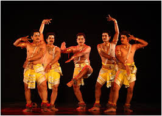

Exploring India's Culture and Heritage
Classical Dance Forms of India
Perini Shiva Tandavam is a vigorous and powerful classical dance form that originated in the Telangana region, especially during the rule of the Kakatiya dynasty in the 12th and 13th centuries. This dance is a tribute to Lord Shiva, particularly in his fierce form as Tandava, the cosmic dancer. Known as the “warrior’s dance”, it was performed by soldiers before going to battle to invoke strength, courage, and divine blessings.
Perini Shiva Tandavam is a vigorous and powerful classical dance form that originated in the Telangana region, especially during the rule of the Kakatiya dynasty in the 12th and 13th centuries. This dance is a tribute to Lord Shiva, particularly in his fierce form as Tandava, the cosmic dancer. Known as the “warrior’s dance”, it was performed by soldiers before going to battle to invoke strength, courage, and divine blessings.
Perini Shiva Tandavam is a classical dance that dates back to the 12th and 13th centuries, during the reign of the Kakatiya dynasty in what is now Telangana. It was known as the “warrior dance” because it was performed by soldiers before going to war. The dance was meant to invoke the energy and blessings of Lord Shiva, especially in his fierce form as Nataraja, the cosmic dancer.
Perini Shiva Tandavam was revived in the 1970s by Padma Shri Dr. Nataraja Ramakrishna, a renowned classical dancer and scholar. He studied old temple sculptures, inscriptions, and literature to reconstruct the movements, expressions, and rhythms of the dance. Thanks to his efforts, Perini has regained recognition and is now performed on cultural stages and taught in classical dance academies, especially in Telangana.
The dance is known for its dynamic movements, strong footwork, rhythmic patterns, and powerful expressions. Dancers channel the Tandava energy of Shiva, showing strength and devotion through intense movements. It is usually accompanied by traditional instruments like mridangam, conch, and bells. Perini is not just a dance; it is a spiritual and physical experience that connects the dancer with divine energy and heroic spirit.